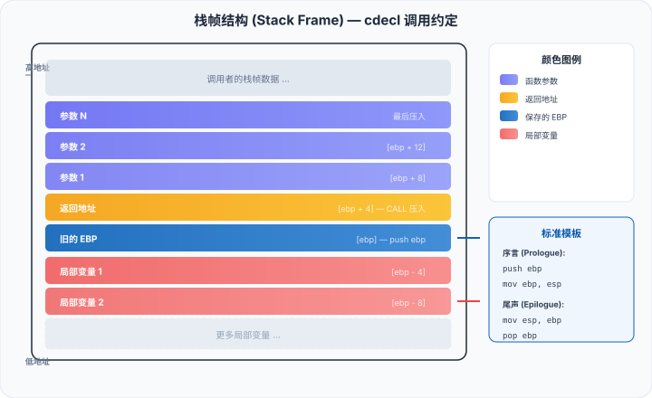

アセンブリ言語 - プロシージャ（サブルーチン）
プロシージャ（Procedure）は、アセンブリ言語で関数/サブルーチンを再利用するための仕組みであり、コードを構造化し、再利用可能にします。プロシージャとスタックの関係を理解することは、アセンブリプログラミングの重要なマイルストーンです。
プロセスとは何か
过程これは、複数回呼び出せるコードブロックであり、高級言語における関数（Function）やサブルーチン（Subroutine）に似ています。
アセンブリでは、プロシージャはCALL命令呼び出し、経由RET指令返回。CALLリターンアドレスをスタックにプッシュし、RETスタックから戻りアドレスをポップし、そこへジャンプして戻ります。
实例
; 最も単純なプロシージャ呼び出しの例
section .data
msg db 'Hello, サンプル!', 0xA
len equ $ - msg
section .text
global _start
_start:
call print_message ; 调用过程（将下条指令地址压栈）
call print_message ; 再次调用
mov eax, 1
mov ebx, 0
int 0x80
; 过程：打印消息
print_message:
push eax ; 変更するレジスタを保存する
push ebx
push ecx
push edx
mov eax, 4
mov ebx, 1
mov ecx, msg
mov edx, len
int 0x80
pop edx ; 恢复寄存器（按相反顺序）
pop ecx
pop ebx
pop eax
ret ; 呼び出し元へ戻る（スタックからリターンアドレスをポップする）
プロシージャ内部では、変更するすべてのレジスタを保存および復元する必要があります（EAX が戻り値の場合は除く）。これはアセンブリプログラミングの基本マナーです。これを行わないと、呼び出し元のレジスタ値が意図せず変更される可能性があります。
CALLとRETの原理
CALLとRETペアで動作し、スタックに依存して戻りアドレスを管理します：
| 指令 | 実際に実行される操作 |
|---|---|
CALL label | push eip（次の命令アドレスを保存）+jmp label |
RET | pop eip（スタックからアドレスをポップしてジャンプ） |
レジスタを介したパラメータ渡し
プロシージャを呼び出す前に、パラメータを取り決められたレジスタに格納します：
实例
; 通过寄存器传递参数
section .data
newline db 0xA
section .text
global _start
_start:
; 调用 add_two 过程：计算 10 + 20
mov eax, 10 ; 最初の引数を eax に置く
mov ebx, 20 ; 2番目の引数を ebx に置く
call add_two ; 调用过程
; eax 内の戻り値 = 30
mov ebx, eax ; 退出码 = 30
mov eax, 1
int 0x80
; 過程：eax + ebx を計算し、結果は eax に格納される
add_two:
add eax, ebx ; eax = eax + ebx
ret
スタックを介したパラメータ渡し
スタックによるパラメータ渡しはより柔軟で、C言語などの高級言語の標準的な方法です：
实例
; 通过栈传递参数（cdecl 风格）
section .data
msg db 'Sum is: '
msg_len equ $ - msg
newline db 0xA
section .bss
result_buf resb 4
section .text
global _start
_start:
; 调用 sum 过程：计算 100 + 200
push dword 200 ; 压入第 2 个参数
push dword 100 ; 压入第 1 个参数
call sum ; 调用过程
add esp, 8 ; ★ 调用者清理栈（cdecl 约定）
; 戻り値は eax 内 = 300
mov ebx, eax
mov eax, 1
int 0x80
; 过程：sum(a, b) = a + b
sum:
push ebp ; ★ 古いベースポインタを保存する
mov ebp, esp ; ★ 新しいスタックフレームのベースアドレスを設定する
; スタックレイアウト（高アドレスから低アドレスへ）：
; [ebp+12] = 参数 b（200）
; [ebp+8] = 参数 a（100）
; [ebp+4] = 返回地址
; [ebp] = 古い ebp
; [ebp-4] = 局部变量空间
mov eax, [ebp + 8] ; 获取第 1 个参数（a）
add eax, [ebp + 12] ; 加上第 2 个参数（b）
pop ebp ; ★ 古いベースポインタを復元する
ret ; 返回
スタックフレーム構造図：

以下は対応するテキストによる図示です：
高地址 +------------------+ | 参数2 (200) | <-- [ebp + 12] +------------------+ | 参数1 (100) | <-- [ebp + 8] +------------------+ | 返回地址 | <-- [ebp + 4] +------------------+ | 旧的 EBP | <-- [ebp] (当前 EBP 指向这里) +------------------+ | 局部变量区 | <-- [ebp - 4], [ebp - 8], ... +------------------+ <-- ESP 指向这里 低地址
関数プロローグ（Prologue）
push ebp; mov ebp, espとエピローグ（Epilogue）pop ebp; ret（或leave; ret）は標準的なスタックフレーム管理テンプレートであり、ほとんどすべてのアセンブリ関数はこの構造で始まり、終わります。
プロシージャの戻り値
戻り値は通常、EAX レジスタ（32ビット値）または EDX:EAX（64ビット値）に格納されます：
实例
; 返回 int
call get_answer
; eax = 42
; 返回 64 位值（如 long long）
call get_big_value
; edx:eax = 64 位结果
get_answer:
mov eax, 42 ; 戻り値を eax に置く
ret
get_big_value:
mov eax, 0x00000001 ; 低 32 位
mov edx, 0x00000000 ; 高 32 位
ret
局部变量
ローカル変数はスタック空間を使用し、プロシージャのプロローグで ESP を減らすことによって割り当てます：
实例
; プロシージャ内でローカル変数を使用する
section .text
global _start
_start:
push dword 10
push dword 20
call multiply_add
add esp, 8
; eax = 10 * 20 + 10 + 20 = 230
mov ebx, eax
mov eax, 1
int 0x80
; 过程：multiply_add(x, y) = x*y + x + y
multiply_add:
push ebp
mov ebp, esp
sub esp, 8 ; ★ スタック上に8バイトのローカル変数領域を割り当てる
; 現在、[ebp-4] と [ebp-8] は使用可能なローカル変数です。
mov eax, [ebp + 8] ; x
mov ebx, [ebp + 12] ; y
; [ebp-4] = x * y
imul eax, ebx
mov [ebp - 4], eax ; 局部变量1 = x * y
; [ebp-8] = x + y
mov eax, [ebp + 8]
add eax, [ebp + 12]
mov [ebp - 8], eax ; 局部变量2 = x + y
; 返回值 = [ebp-4] + [ebp-8]
mov eax, [ebp - 4]
add eax, [ebp - 8]
; ★ 清理局部变量空间并恢复
mov esp, ebp ; 等价于 add esp, 8
pop ebp
ret
ローカル変数はスタックフレーム内に割り当てられ、プロシージャが戻ると自動的に解放されます。使用
leave命令は置き換え可能mov esp, ebp; pop ebp、効果は等価です。
プロシージャ呼び出し規約の比較
| 约定 | 参数传递 | 栈清理者 | 寄存器保存 | 返回值 |
|---|---|---|---|---|
| cdecl | スタック（右から左にプッシュ） | 调用者 | EAX、ECX、EDXは呼び出し元が保存 | EAX |
| stdcall | スタック（右から左にプッシュ） | される呼び出し側 | EAX、ECX、EDXは呼び出し元が保存 | EAX |
| fastcall | ECX, EDX + 栈 | される呼び出し側 | EAX、ECX、EDXは呼び出し元が保存 | EAX |